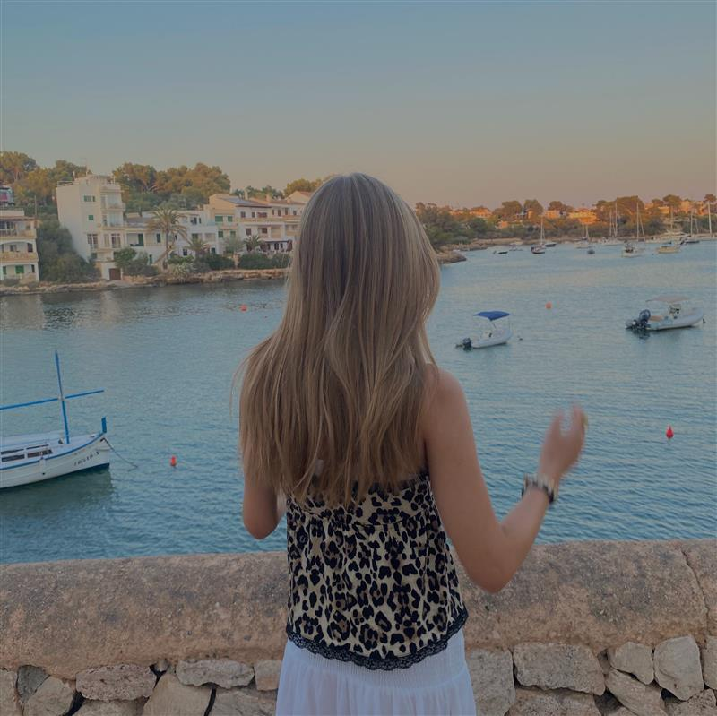
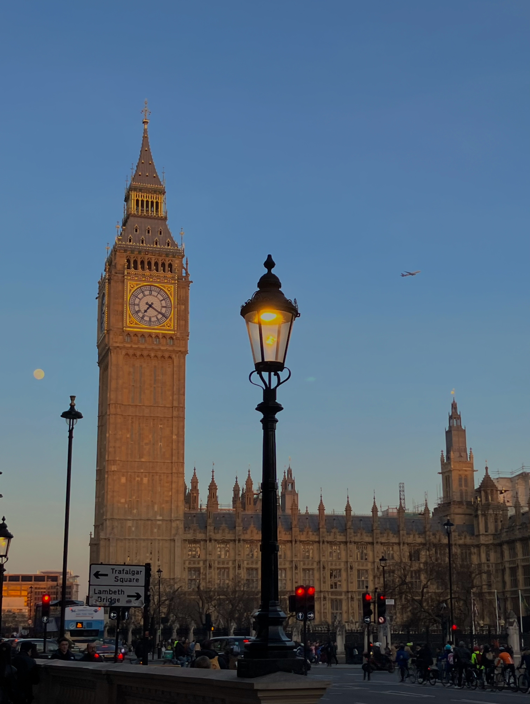
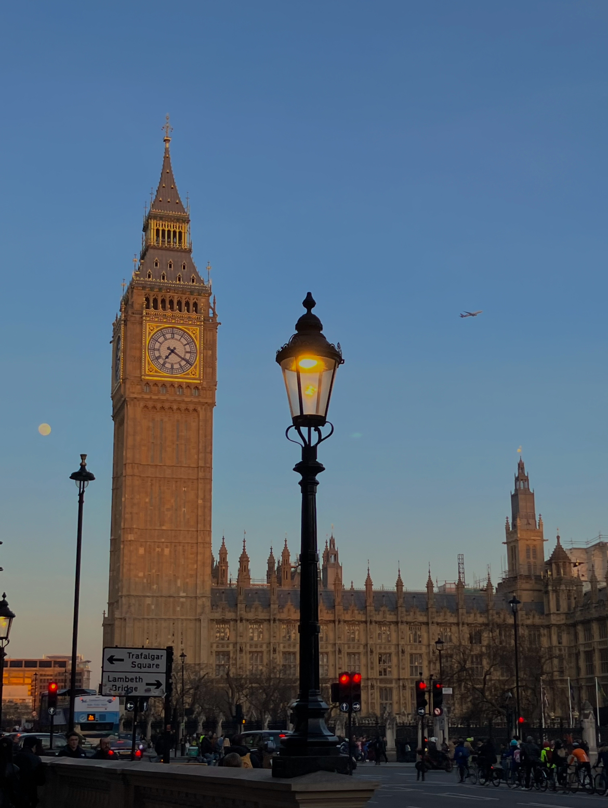

IDA I UTLANDET
Å reise er noe av det beste jeg vet om! Jeg er veldig i glad i å ta bilder når jeg er på ferie, derfor har jeg laget bildegallerier fra mine 3 favorittsteder.

Hvorfor liker jeg å reise?
Jeg liker å reise fordi det gir meg en følelse av frihet og eventyr. Når jeg besøker nye steder, får jeg oppleve ulike kulturer, smake ny mat og møte spennende mennesker. Det er inspirerende å se hvordan folk lever på andre måter, og det får meg til å sette mer pris på verden rundt meg. Hver reise gir meg minner, nye perspektiver og en følelse av glede som varer lenge etter at jeg har kommet hjem.
MINE TOPP 3 REISEDESTINASJONER
 
